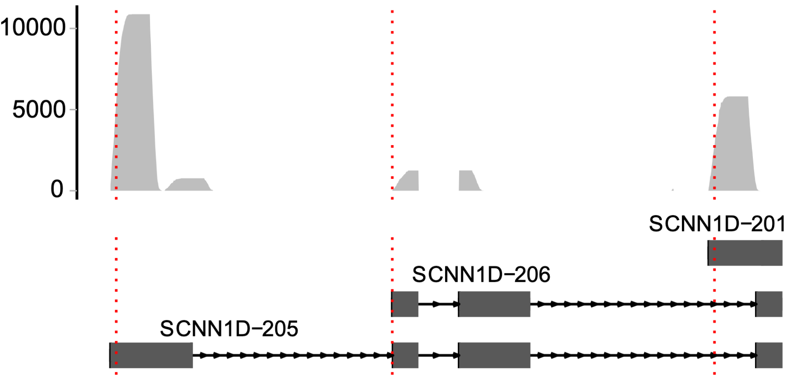

Usage
scATS can analyze both single-end and paired-end 5’-end scRNA-seq data, enabling direct quantification using Seurat objects, while incorporating RNA degradation (RD) modeling through expectation-maximization (EM).
The main functions of scATS are: TSSCDF, FindMarkers, psi, Sashimi
TSS inference and quantification
The input files include:
Seurat object (R object)
Alignment file (bam file)
Annotation file (gtf file)
# load packages
suppressMessages({
library(scATS)
library(Seurat)
})
# load input files
seu <- readRDS("demo_seurat.Rds")
Genes <- rownames(seu)
gtfFile <- file.path("demo.gtf")
bams <- "demo.bam"
file.exists(bams)
# quantification using wrapper function
scats <- TSSCDF(object = seu, bam = bams, gtf = gtfFile, genes = Genes, verbose = TRUE)
scats
class: scATSDataSet
dim: 2043 2000
metadata(2): version parameters
assays(3): counts psi theta
rownames(2043): OR4F5@1:69063:+ OR4F5@1:69071:+ ... OR2G6@1:248508175:+
ZNF672@1:248838224:+
rowData names(12): TSS gene_id ... alpha theta
colnames(2000): TGGACGCTCCTTCAAT-1 CGAGCACGTCAGAATA-1 ...
ATCGAGTAGCGGCTTC-1 CTAGAGTAGTGCCATT-1
colData names(4): orig.ident nCount_RNA nFeature_RNA Cell
The quantification results are stored in scats@rowRanges and contain the following columns:
column name |
content |
|---|---|
seqnames |
The chromosomal name of the gene to which TSS belongs. |
ranges |
The genomic locus of TSS, where the growth rate is highest. |
strand |
The genomic strand of the gene to which TSS belongs. |
gene_id |
The Ensembl ID of the gene to which TSS belongs. |
gene_name |
The HGNC Symbol of the gene to which TSS belongs. |
TSS |
The ID of the TSS in the format of [seqnames:ranges:strand]. |
Region |
The growth area of the sorted 5’-starts of read 1, or it can also be interpreted as the |
PSI |
The percent spliced in (PSI) of TSS. |
Percent |
The ratio of TSS reads. |
Annotated |
The nearest annotated TSS locus that exists in the region, if it is NA, |
Greedy |
Greedy for the first TSS. If it is TRUE, it indicates that the first TSS is quantified |
beta |
The area under the cumulative distribution curve : close to 1, indicates no degradation, |
alpha |
The degradation index fitted using the EM algorithm: the larger the value, the more severe the degradation. |
theta |
The PSI value fitted using the EM algorithm. |
AllReads |
The total number of reads used for quantification. |
Note : All the following analyses are based on the scats object.
Finding differentially expressed ATSs
Finding markers of all group
Identifying ATS markers based on θ value.
DE <- scATS::FindMarkersByTheta(object = scats, groupBy = "CellType", group1 = NULL, group2 = NULL, cores = 20)
DE[1:2,]
gene TSS group1 theta1 theta2
<char> <char> <char> <num> <num>
1: OR4F5 OR4F5@1:69063:+ A 0.2780345 0.2835192
2: OR4F5 OR4F5@1:69063:+ B 0.2862817 0.2620500
cell1 cell2 percent1 percent2 p
<int> <int> <num> <num> <num>
1: 6 17 0.896861 1.2772352 0.9682337
2: 10 13 1.459854 0.9885932 0.5724791
The DE object contains following columns:
column name |
content |
|---|---|
gene |
The HGNC Symbol of the gene to which TSS belongs. |
TSS |
The ID of the TSS in the format of [gene_name:seqnames:ranges:strand]. |
group1 |
The levels of group. |
theta1/2 |
The theta value of the TSS in the group. |
cell1/2 |
The number of cell-type corresponding to group. |
percent1/2 |
The ratio of TSS reads. |
p |
The p-value from the Wilcoxon test for differences in psi values among groups. |
Identifying ATS markers based on ψ value.
DE <- scATS::FindMarkers(object = scats, groupBy = "CellType", group1 = NULL, group2 = NULL, cores = 20, majorOnly = F)
DE[1:2,]
TSS G1 G2 n1 n2 N1 N2 Cells1 Cells2 PSI1
<char> <char> <char> <int> <int> <int> <int> <int> <int> <num>
1: OR4F5@1:69071:+ B Other 41 83 156 277 685 1315 0.2088708
2: OR4F5@1:69156:+ B Other 40 90 156 277 685 1315 0.2169872
PSI2 PseudobulkPSI1 PseudobulkPSI2 wald.test wilcox.test prop.test
<num> <num> <num> <num> <num> <num>
1: 0.2488509 0.3492958 0.2088773 0.42343003 0.32714124 3.331726e-11
2: 0.2964099 0.1309859 0.2663185 0.06632703 0.08046456 7.544541e-12
The DE object contains following columns:
column name |
content |
|---|---|
TSS |
The ID of the TSS in the format of [gene_name:seqnames:ranges:strand]. |
G1/2 |
The levels of group. |
n1/2 |
The expression number of the TSS in the G1/2. |
N1/2 |
The expression number of the host gene in the G1/2. |
Cells1/2 |
The number of cell-type corresponding to G1/2. |
PSI1/2 |
The average sum of all individual cell PSIs. |
PseudobulkPSI1/2 |
The PSI value calculated by combining all reads and treating them as a pseudobulk sample. |
wald.test |
The p-value from the Wald test for differences in psi values among groups. |
wilcox.test |
The p-value from the Wilcoxon test for differences in psi values among groups. |
prop.test |
The p-value from the Proportion test for differences in psi values among groups. |
Finding markers of given group
### based on θ value
DE <- scATS::FindMarkersByTheta(object = scats, groupBy = "CellType", group1 = NULL, group2 = NULL, cores = 20)
### based on ψ value
DE <- scATS::FindMarkers(object = scats, groupBy = "CellType", group1 = "A", group2 = "B", cores = 20, majorOnly = F,gene = "OR4F5")
In addition, you can specify the host genes used in the calculation by setting the gene parameter.
Calculating PSI
Calculating PSI based on θ value.
theta <- scATS::ThetaByGroup(object = scats, gene = "OR4F5",groupBy = "CellType")
theta[1:2,]
Group TSS alpha theta
<char> <char> <num> <num>
1: A 1:69156:+ 0.1061093 0.1718889
2: A 1:69090:+ 0.3006347 0.2107304
Calculating PSI based on ψ value.
psi <- scATS::psi(object = scats, groupBy = "CellType", TSS=c("OR4F5@1:69071:+", "OR4F5@1:69156:+"))
psi[1:2,]
TSS groupBy Cells N n mean sd
1 OR4F5@1:69071:+ A 669 129 39 0.2562320 0.4188128
2 OR4F5@1:69071:+ B 685 156 41 0.2088708 0.3822363
se ci median Q1 Q3 mad iqr PseudobulkPSI
1 0.03687441 0.07296233 0 0 0.5 0 0.5 0.2067138
2 0.03060340 0.06045356 0 0 0.2 0 0.2 0.3492958
The theta or psi object contains following columns:
column name |
content |
|---|---|
Group/groupBy |
The level of group. |
TSS |
The ID of the TSS in the format of [gene_name:seqnames:ranges:strand]. |
alpha |
The degradation index fitted using the EM algorithm. |
Cells |
The number of cell-type corresponding to a given groups (The same applies to the following.). |
N |
The expression of the host gene. |
n |
The expression of the TSS. |
mean |
The mean of PSI. |
sd |
The standard deviation (std) of PSI. |
se |
The standard error (SE) of PSI. |
ci |
The confidence interval (CI) of PSI. |
median |
The median of PSI. |
Q1 |
The first quartile (Q1) of PSI. |
Q3 |
The third quartile (Q3) of PSI. |
mad |
The median absolute deviation (MAD) of PSI. |
iqr |
The interquartile range (IQR) of PSI. |
theta/PseudobulkPSI |
The PSI value calculated by combining all reads and treating them as a pseudobulk sample. |
Sashimi plots
# Take SCNN1D gene as an example
scATS::Sashimi(object = scats,
bam = bams,
xlimit = c(1280352, 1282325),
transcripts = c("SCNN1D-201","SCNN1D-206","SCNN1D-205"),
gtf = gtfFile,
gene = "SCNN1D",
TSS = c(1280452, 1281224, 1282125), # TSS位点
free_y = T,#是否scale
base_size = 12, #read部分字体大小
rel_height=0.9, #注释/read ，小于1 read部分比例更大
fill.color = "grey",
line.color = "red",
line.type = 3) -> p
p

sessionInfo()
R version 3.6.0 (2019-04-26)
Platform: x86_64-pc-linux-gnu (64-bit)
Running under: Ubuntu 16.04.7 LTS
Matrix products: default
BLAS: /usr/lib/openblas-base/libblas.so.3
LAPACK: /usr/lib/libopenblasp-r0.2.18.so
locale:
[1] LC_CTYPE=en_US.UTF-8 LC_NUMERIC=C LC_TIME=en_US.UTF-8
[4] LC_COLLATE=en_US.UTF-8 LC_MONETARY=en_US.UTF-8 LC_MESSAGES=en_US.UTF-8
[7] LC_PAPER=en_US.UTF-8 LC_NAME=C LC_ADDRESS=C
[10] LC_TELEPHONE=C LC_MEASUREMENT=en_US.UTF-8 LC_IDENTIFICATION=C
attached base packages:
[1] stats graphics grDevices utils datasets methods base
loaded via a namespace (and not attached):
[1] bitops_1.0-7 matrixStats_1.3.0 bit64_4.0.5
[4] RcppAnnoy_0.0.19 RColorBrewer_1.1-3 progress_1.2.3
[7] httr_1.4.7 GenomeInfoDb_1.22.1 tools_3.6.0
[10] irlba_2.3.3 utf8_1.2.4 R6_2.5.1
[13] KernSmooth_2.23-24 DBI_1.2.3 BiocGenerics_0.32.0
[16] colorspace_2.1-0 tidyselect_1.2.1 prettyunits_1.2.0
[19] bit_4.0.5 curl_5.2.1 compiler_3.6.0
[22] cli_3.6.3 Biobase_2.46.0 DelayedArray_0.12.3
[25] rtracklayer_1.46.0 scales_1.3.0 lmtest_0.9-40
[28] ggridges_0.5.6 askpass_1.2.0 rappdirs_0.3.3
[31] stringr_1.5.1 digest_0.6.25 Rsamtools_2.2.3
[34] R.utils_2.12.3 XVector_0.26.0 pkgconfig_2.0.3
[37] htmltools_0.5.0 parallelly_1.37.1 dbplyr_2.5.0
[40] fastmap_1.2.0 htmlwidgets_1.5.1 rlang_1.1.1
[43] rstudioapi_0.11 RSQLite_2.3.7 generics_0.1.3
[46] zoo_1.8-12 jsonlite_1.8.8 ica_1.0-3
[49] BiocParallel_1.20.1 dplyr_1.1.4 R.oo_1.26.0
[52] RCurl_1.98-1.16 magrittr_2.0.3 GenomeInfoDbData_1.2.2
[55] patchwork_1.2.0 Matrix_1.5-3 Rcpp_1.0.13
[58] munsell_0.5.1 S4Vectors_0.24.4 fansi_1.0.6
[61] reticulate_1.38.0 lifecycle_1.0.4 R.methodsS3_1.8.2
[64] stringi_1.8.4 MASS_7.3-57 SummarizedExperiment_1.16.1
[67] zlibbioc_1.32.0 Rtsne_0.17 BiocFileCache_1.10.2
[70] grid_3.6.0 blob_1.2.4 ggrepel_0.9.5
[73] listenv_0.9.1 parallel_3.6.0 crayon_1.5.3
[76] lattice_0.20-45 Biostrings_2.54.0 cowplot_1.1.3
[79] splines_3.6.0 GenomicFeatures_1.38.2 hms_1.1.3
[82] knitr_1.29 pillar_1.9.0 igraph_2.0.3
[85] GenomicRanges_1.38.0 future.apply_1.11.2 codetools_0.2-20
[88] biomaRt_2.42.1 stats4_3.6.0 leiden_0.4.3.1
[91] XML_3.99-0.3 glue_1.7.0 png_0.1-8
[94] vctrs_0.6.5 gtable_0.3.5 openssl_2.2.0
[97] RANN_2.6.1 future_1.33.2 cachem_1.1.0
[100] ggplot2_3.5.1 xfun_0.16 survival_3.7-0
[103] tibble_3.2.1 GenomicAlignments_1.22.1 AnnotationDbi_1.48.0
[106] memoise_2.0.1 IRanges_2.20.2 cluster_2.1.6
[109] globals_0.16.3 fitdistrplus_1.2-1 ROCR_1.0-11